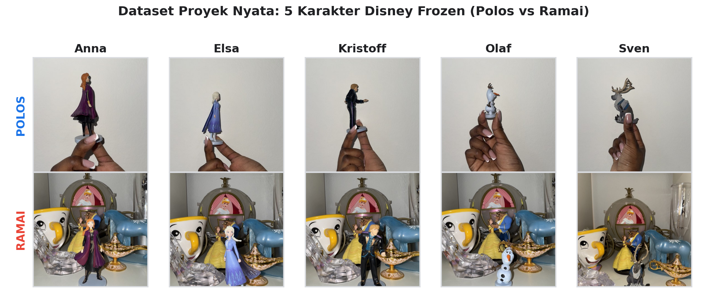
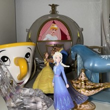
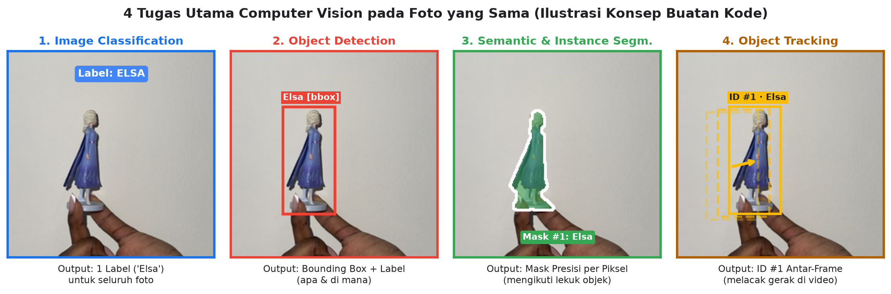
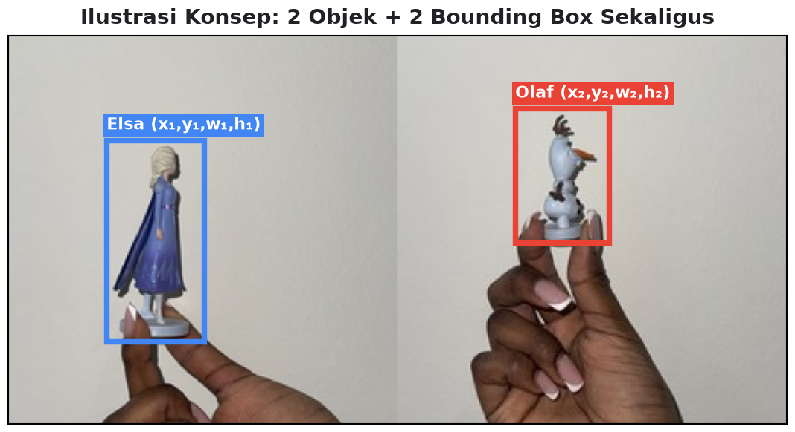
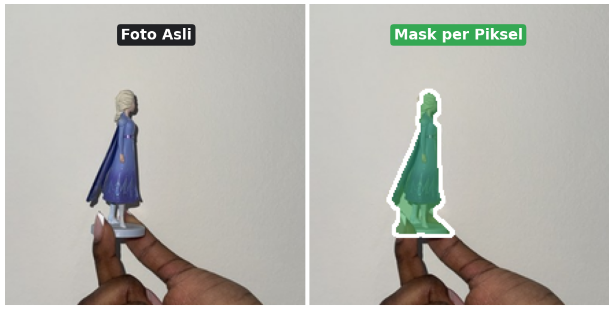
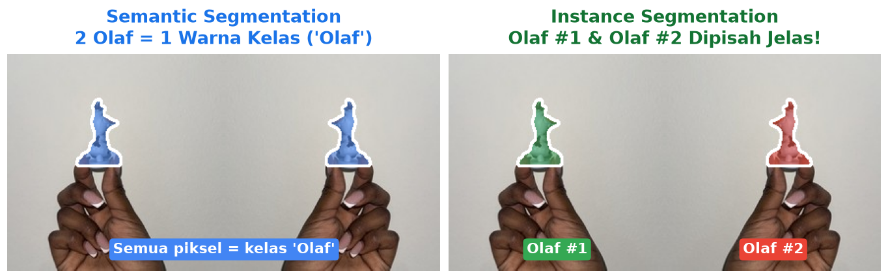
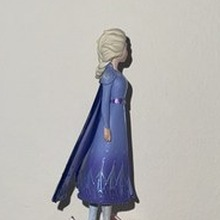
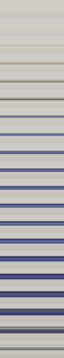
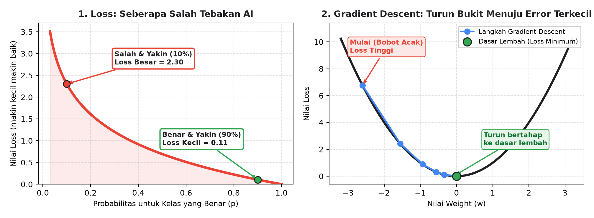
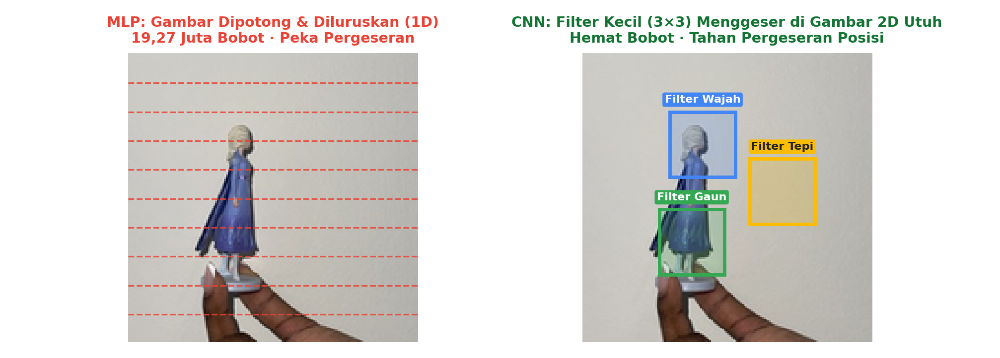

Menyambung P01: Foto Frozen di Mata Komputer = Matriks Angka

143
Foto Asli (v1)
5 Kelas
Anna s.d. Sven
102 / 41
Polos vs Ramai
7 Sesi
Sesi Foto
Modal dari P01 yang Kita Bawa Hari Ini
Setiap foto warna adalah array 3D berukuran (Tinggi, Lebar, 3) — misalnya setelah di-resize menjadi (224, 224, 3).
Angka piksel asli 0–255 dinormalisasi menjadi 0.0–1.0 (float32) agar perhitungan komputer stabil.
Dataset proyek kita berisi 5 karakter Disney Frozen dalam 2 kondisi latar: Polos dan Ramai.
Pertanyaan besar hari ini: Setelah foto jadi angka 0.0–1.0, bagaimana komputer bisa menebak isinya?
PEMANASAN · TANYA-JAWAB #1
Bagaimana Komputer Tahu Ini Foto Elsa?
Komputer hanya melihat ribuan angka piksel 0.0–1.0. Menurutmu, cara mana yang paling mungkin berhasil membedakan Elsa di latar polos maupun latar rak yang ramai?
A. Menulis aturan manual: if warna_biru > 30%: return 'Elsa'
B. Memberi komputer banyak contoh foto berlabel, lalu membiarkannya belajar pola angka sendiri lewat Neural Network
C. Membandingkan ukuran file JPEG (KB) masing-masing foto
Jawaban: B! Aturan manual (A) langsung gagal jika latar ramai punya benda biru atau pencahayaan redup. Dengan Deep Learning (Neural Network), komputer mempelajari pola angka langsung dari contoh foto berlabel.

Foto Elsa di latar rak ramai — aturan warna sederhana mudah tertipu!
Belajar dari Contoh: Model mempelajari kombinasi pola wajah, rambut, dan gaun secara otomatis dari data latih.
BAB 01 · GAMBARAN BESAR
AI vs Machine Learning vs Deep Learning
Tiga istilah yang sering dicampuradukkan — padahal membentuk hierarki subset: Deep Learning adalah bagian dari Machine Learning, dan Machine Learning adalah bagian dari AI.
BAB 01 · ARTIFICIAL INTELLIGENCE (AI)
Artificial Intelligence (AI): Sistem yang Mampu Mengambil Keputusan Cerdas
Definisi AI: Cabang ilmu komputer untuk membangun sistem yang mampu mengamati lingkungan, menalar / memutuskan, dan bertindak guna mencapai suatu tujuan — baik lewat pencarian logika maupun belajar dari data.
BUKAN AI · AUTOMASI STATIS
Menjalankan Langkah Tetap
Hanya mengikuti instruksi baku yang kaku — tidak mencari strategi dan tidak belajar.
Contoh: Kalkulator, rumus Excel (SUM), vending machine, menu tombol 1–2–3.
Ciri: Input sama selalu lewat jalur statis yang ditulis persis oleh programmer.
AI KLASIK · PENALARAN & PENCARIAN
Cerdas Tanpa Belajar dari Data
Memecahkan masalah lewat search, planning, & logika formal.
Ciri: Performa meningkat saat diberi contoh data makin beragam & berkualitas.
Ringkasnya: Tidak semua program komputer adalah AI, dan tidak semua AI memakai Machine Learning — tetapi untuk memahami foto/gambar, kita memerlukan AI Modern (ML & DL).
BAB 01 · MACHINE LEARNING
Machine Learning (ML): Belajar dari Contoh
Data Nyata Proyek (143 Foto): Bandingkan alur program aturan manual vs alur belajar Machine Learning!
ATURAN MANUAL
Manusia Menulis Semua Aturan
BAB 01 · DEEP LEARNING
Deep Learning (DL) di Dalam Peta AI ⊃ ML ⊃ DL
DEEP LEARNING (DL)
ML dengan Neural Network Berlapis Banyak
BAB 01 · PERBEDAAN KUNCI
Perbedaan Spesifik: Machine Learning vs Deep Learning
Foto Elsa
→
1. Ekstraksi Fitur Manual (oleh Manusia)
[R=0.67, G=0.66, B=0.67, Edge=0.04, Rasio=0.75]
→
2. Algoritma Statistik (ML)
Random Forest · SVM · Regression
→
Prediksi Elsa
Piksel Mentah
→
Deep Learning: Neural Network Berlapis Banyak (Feature Learning + Klasifikasi)
AI mempelajari sendiri fitur penting langsung dari piksel mentah: tepi → bentuk → karakter!
→
Prediksi Elsa
Aspek
Machine Learning (ML Klasik)
Deep Learning (DL)
Algoritma Inti
Algoritma matematika & statistik klasik (Linear/Logistic Regression, Decision Tree, Random Forest, SVM).
Arsitektur Neural Network berlapis banyak (MLP, CNN, Transformer).
Fitur / Ciri Data
Fitur harus jelas & terstruktur; pada gambar, manusia harus mengekstrak fitur secara manual.
Dipelajari otomatis oleh AI langsung dari data mentah (piksel) tanpa ekstraksi fitur manual.
Cocok untuk Data
Data tabular (tabel kolom jelas: umur, gaji, luas rumah, transaksi).
Data tidak terstruktur (foto, video, suara, teks) — termasuk foto Frozen kita!
Data & Komputasi
Cukup data kecil–menengah; cepat dijalankan di CPU biasa.
Umumnya butuh data lebih banyak & GPU (atau dibantu Transfer Learning di P04).
BAB 01 · TANYA-JAWAB #2
Di Mana Letak Proyek Frozen di Peta Ini?
Proyek kita melatih model Neural Network berlapis banyak langsung pada foto piksel 5 karakter Frozen tanpa menulis aturan ciri warna secara manual. Termasuk kategori mana?
A. AI klasik berbasis pencarian / Expert System (bukan ML, bukan DL)
B. Machine Learning klasik (fitur warna/bentuk harus diekstrak manual oleh manusia)
C. Deep Learning — sekaligus bagian dari Machine Learning dan Artificial Intelligence
Jawaban: C! Dalam hierarki subset (AI ⊃ ML ⊃ DL), model Deep Learning otomatis juga termasuk Machine Learning dan AI. Keunggulan utamanya: fitur gambar dipelajari otomatis dari piksel mentah!
Foto Frozen masuk langsung ke Neural Network — di lapis mana posisinya?
Tepat (DL ⊂ ML ⊂ AI)! Deep Learning langsung belajar fitur dari piksel mentah foto Frozen.
BAB 02 · TASK COMPUTER VISION
Task Computer Vision
Computer Vision membuat komputer 'melihat' foto dan video — tetapi bentuk output-nya berbeda-beda tergantung jenis tugasnya.
BAB 02 · PERBANDINGAN TASK COMPUTER VISION
4 Task Computer Vision pada Foto yang Sama

1. Classification
Pertanyaan: “Foto ini apa?” Output: 1 label kelas (proyek kita!).
2. Object Detection
Pertanyaan: “Apa & di mana?” Output:Bounding box + label.
3. Semantic & Instance Segm.
Pertanyaan: “Piksel mana persisnya?” Output:Mask presisi per piksel.
4. Object Tracking
Pertanyaan: “Ke mana bergeraknya?” Output:Bbox + ID antar-frame video.
BAB 02 · IMAGE CLASSIFICATION
Image Classification: Memberi Label pada Seluruh Foto
Output: Label “Elsa” + Probabilitas
ILUSTRASI OUTPUT PROBABILITAS (5 KELAS):
Elsa
88%
Anna
7%
Lainnya
5%
Cara Kerja & Karakteristik
Input: 1 gambar utuh (misalnya foto figurine 224×224×3).
Output: Daftar probabilitas untuk setiap kelas yang mungkin (di proyek kita: Anna, Elsa, Kristoff, Olaf, Sven).
Batasan: Model tidak menggambar kotak lokasi objek — ia mengasumsikan ada 1 objek utama di foto tersebut.
Contoh sehari-hari: Klasifikasi jenis penyakit daun, pilah jenis sampah, dan proyek klasifikasi 5 karakter Frozen kita!
Jembatan ke Bab 3: Karena hanya menebak 1 dari 5 kelas, Output Layer-nya cukup 5 neuron!
BAB 02 · OBJECT DETECTION
Object Detection: Apa Objeknya & Di Mana Letaknya?

Format Output per Objek: 4 angka koordinat kotak (x, y, w, h) + 1 label kelas (contoh: Elsa & Olaf sekaligus).
Beda Utama dengan Image Classification
Bisa banyak objek sekaligus: Dalam 1 foto yang berisi Elsa, Anna, dan Olaf bersamaan, semua dideteksi satu per satu.
Output ganda: Untuk setiap objek, model mengeluarkan 4 angka koordinat kotak (bounding box: posisi & ukuran) + 1 label kelas.
Contoh populer: Kamera pendeteksi wajah di HP, sistem kamera mobil otonom (pejalan kaki, rambu, kendaraan), kasir otomatis penghitung barang.
Catatan arsitektur: Karena harus memprediksi banyak kotak + label, output layer-nya jauh lebih kompleks daripada 5 neuron biasa.
BAB 02 · IMAGE SEGMENTATION
Semantic and Instance Segmentation: Bentuk per Piksel
Bukan Kotak — Melainkan Mask Presisi
Bounding box masih ikut membawa latar belakang di sudutnya; Segmentation melabeli setiap piksel sesuai bentuk asli objek.
Contoh: Efek blur background Zoom/Meet, potong stiker di HP, pemetaan tumor di citra medis (MRI/CT-Scan).

Output: Peta mask per piksel seukuran gambar untuk tiap kelas atau tiap objek.
Perbandingan: Semantic vs Instance

Ringkasnya:Semantic menggabungkan semua objek sekelas dalam 1 warna; Instance memisahkan tiap individu (Olaf #1 vs Olaf #2).
BAB 02 · OBJECT TRACKING
Object Tracking: Mengikuti Objek Antar-Frame Video
Ilustrasi konsep: ID #1 (Elsa) bergerak ke kanan & ID #2 (Olaf) tetap dikenali dengan ID yang sama!
Kapan Dipakai?
Menghitung lalu lintas: Memastikan mobil yang lewat tidak dihitung dua kali pada frame berikutnya.
Analisis olahraga: Melacak lintasan bola dan pergerakan tiap pemain.
Kamera otomatis: Mengikuti pembicara yang berjalan di panggung.
Wawasan: Proyek Frozen kita memakai foto tunggal (bukan video), jadi kita fokus ke Image Classification.
BAB 02 · LATIHAN INTERAKTIF
Cocokkan Kasus Nyata dengan Task CV yang Tepat
Klik jawaban yang paling sesuai untuk tiap kasus di bawah ini:
1. Aplikasi menebak jenis penyakit daun dari 1 foto daun utuh.
Pilih salah satu task di sebelah kanan →
2. Kamera kasir otomatis menghitung banyak barang berbeda di atas nampan.
Pilih salah satu task di sebelah kanan →
3. Fitur hapus latar belakang rapi tepat mengikuti lekuk rambut di foto profil.
Pilih salah satu task di sebelah kanan →
4. CCTV jalan tol mengukur kecepatan & lintasan setiap mobil di rekaman video.
Pilih salah satu task di sebelah kanan →
Pola cepat mengingat: 1 label foto = Classification · Kotak banyak objek = Detection · Mask per piksel = Segmentation · Video + ID = Tracking.
BAB 02 · TANYA-JAWAB #3
Task Mana untuk Proyek Frozen & Kenapa?
Setiap foto di folder data/frozen_v1/ berisi 1 figurine utama dari 5 karakter (Anna, Elsa, Kristoff, Olaf, Sven) dan tujuannya menebak nama karakternya. Task CV mana yang paling tepat?
A. Image Classification (multi-kelas: 5 kelas)
B. Semantic / Instance Segmentation karena latar belakang ada yang ramai
C. Object Tracking karena ada 7 sesi foto berbeda
Jawaban: A (Image Classification multi-kelas)! Kita hanya perlu 1 label karakter per foto (bukan menggambar mask piksel maupun melacak gerak video). Masalah latar ramai tetap bisa ditangani oleh model klasifikasi Deep Learning yang dilatih dengan foto kondisi polos dan ramai.
1 foto figurine → 1 nama karakter. Tugas CV yang mana?
Image Classification
Multi-Class (5 Kelas): Input 1 foto (224,224,3) → Output 5 probabilitas berjumlah 100%. Sekarang kita bongkar jaringan saraf yang melakukannya di Bab 3!
BAB 03 · NEURAL NETWORK
Bedah Total: Neural Network
Kita rakit dari bagian paling kecil (1 Neuron) → Input Layer → Output Layer → hubungan tiap neuron → Hidden Layer → hitungan Forward Pass → cara belajar.
BAB 03 · NEURON
Dimulai dari 1 Neuron: 1 Unit Pemegang 1 Angka
Apa Itu 1 Neuron?
Definisi:Neuron (Node) adalah unit terkecil penyusun Neural Network yang memegang 1 nilai angka (terinspirasi sel saraf otak).
Pada gambar: Foto terdiri dari banyak piksel bernilai 0.0–1.0. Setiap 1 nilai piksel diwakili oleh tepat 1 Neuron!
Catatan akurat: Di lapisan paling depan, neuron hanya memegang nilai piksel. Di lapisan berikutnya, neuron akan menghitung angkanya dari neuron-neuron sebelumnya.
Langkah berikutnya: Karena 1 foto punya banyak piksel, mari kita susun semua neuron piksel tersebut ke bawah!
Klik kotak mana saja di grid 8×8!
1. Foto Asli Elsa
Zoom Piksel
2. Kotak Piksel (8×8)
Baris 5, Kol 3
Ambil 1 Piksel
0.45
nilai 0–1
1 Nilai Piksel
x₁
0.45
3. 1 Neuron
(pemegang 1 angka)
Setiap 1 kotak piksel pada foto Elsa diwakili oleh tepat 1 lingkaran Neuron yang memegang angkanya.
BAB 03 · FLATTEN & INPUT LAYER
Neuron Disusun ke Bawah (Flatten) = Input Layer
Input Layer: 16 / 16 neuron (Selesai!)
Foto Elsa (Crop)

Dibagi 4×4 (16 piksel nyata) agar warna asli & urutan pindai terlihat jelas.
Bagi 4×4
1. Pindai Kiri → Kanan, Atas → Bawah
Baris 1 (x₁..x₄), Baris 2 (x₅..x₈), Baris 3 (x₉..x₁₂), lalu Baris 4 (x₁₃..x₁₆).
2. Ubah & Susun Bertumpuk (Flatten)
Setiap kotak piksel menjadi 1 neuron lalu ditumpuk rapi vertikal dari atas ke bawah.
3. Terbentuk Input Layer
Kumpulan neuron dalam 1 kolom vertikal disebut Layer — lapisan pertama ini adalah Input Layer!
BAB 03 · INPUT LAYER
Input Layer: Tinggi × Lebar × Channel
1. Foto Original Elsa
Lebar (W) = 224
Tinggi (H) = 224
C = 3 (R·G·B)
Shape: (224, 224, 3) · RGB
Flatten
piksel demi piksel
2. Hasil Flatten (1D)
Baris 1

Baris akhir
HASIL PERKALIAN
224 × 224 × 3
TOTAL NEURON:
150.528
neuron piksel bertumpuk (3× lipat dari Grayscale)
224 (H) × 224 (W) × 3 (RGB) = 150.528
Angka
skala 0.0–1.0
3. Input Layer (Angka)
1 Kolom Vertikal · 150.528 Neuron
Klik piksel di Foto Elsa atau neuron di atas!
Aturan cepat: Pada foto berwarna (RGB = 3), tiap 1 kotak piksel pecah menjadi 3 neuron (R, G, B). Klik ▶ Putar, ⏭ +1 Piksel, atau klik kotak piksel mana saja pada Foto Elsa!
BAB 03 · INPUT & OUTPUT LAYER
Input Layer & Output Layer
Interaktif: Klik ▶ Putar Semua, ⏭ +1 Langkah, atau klik langsung piksel foto / neuron Input / neuron Output!
1. Foto Original
224×224×3
Flatten
Pilih tertinggi
4. Hasil Klasifikasi
PREDIKSI AKHIR
ELSA
89% Yakin
Angka peluang = ilustrasi konsep
1. Foto Original
Foto asli Frozen (224×224×3) dipindai piksel demi piksel sebagai data mentah awal.
2. Input Layer
Semua nilai piksel di-flatten jadi 150.528 neuron — selalu jauh lebih banyak daripada Output Layer.
3. Output Layer
Selalu 1 layer, jumlah neuron = jumlah kelas (5 neuron); tiap neuron input terhubung ke semua 5 output.
4. Hasil Klasifikasi
Skor 5 neuron diubah jadi persentase (Softmax), lalu peluang tertinggi (Elsa 89%) dipilih!
Aturan Kunci (MLP · Klasifikasi Multi-Kelas):Ukuran piksel × channel (H×W×C) menentukan jumlah neuron di Input Layer · Jumlah kelas gambar menentukan jumlah neuron di Output Layer(catatan: klasifikasi biner 2 kelas cukup 1 neuron Sigmoid).
Foto dari 5 kelas + Label masuk ke Input Layer membawa nilai piksel nyatanya.
2. Weight + Bias → Skor z
Input dikali Weight (w) lalu ditambah Bias (b) menghasilkan skor mentah z tiap kelas.
3. Activation Function → Hasil Akhir
Softmax mengubah z jadi probabilitas 0–100%; training menguatkan w & b ke kelas benar!
BAB 03 · WEIGHT & BIAS
Weight & Bias: Bagaimana Neural Network Menimbang Fitur Gambar
1. Apa Itu Weight (w) & Bias (b)?
Weight (w): angka bobot pengali di tiap kabel fitur — w > 0 mendukung kelas, w < 0 menekan, w ≈ 0 mengabaikan.
Bias (b): angka penggeser ambang awal (offset) — mengatur seberapa mudah atau ketat neuron kelas menyala.
2. Kenapa Keduanya Diperlukan?
Tanpa Weight: semua piksel dianggap sama pentingnya — model gagal membedakan biru gaun Elsa dari latar polos.
Tanpa Bias: skor terkunci di 0 saat input 0 — tidak punya garis ambang sehingga kelas lain mudah ikut aktif!
3. Bagaimana Cara Kerjanya?
z = (x₁·w₁ + x₂·w₂ + x₃·w₃ + x₄·w₄) + b
Saat training, mesin menggeser w & b otomatis agar skor z foto target jadi positif tinggi dan karakter lain rendah/negatif.
4. Simulasi pada Dataset Frozen (Neuron Detektor y₂ · Elsa)Elsa Aktif Tertinggi!
Geser Weight (w) & Bias (b)
w₁ · Merah (R)-18.6
w₂ · Hijau (G)-2.4
w₃ · Biru (B)+32.4
w₄ · Piksel Atas-7.2
b · Bias (Ambang)-2.3
Sumbangan ke Skor Elsa (+ vs −)
BAB 03 · ACTIVATION FUNCTION
Activation Function: Dari Skor Mentah Menjadi Aktivasi & Peluang
1. Apa Itu Activation Function?
Fungsi matematika di ujung neuron yang mengubah skor mentah z (bisa minus atau plus bebas) menjadi sinyal keluaran aktif yang berguna bagi lapisan berikutnya atau prediksi akhir.
2. Kenapa Wajib Ada?
Memecah garis lurus (Non-Linearity): Tanpa aktivasi, menumpuk 100 Hidden Layer tetap setara 1 garis lurus — mustahil mengenali lekuk wajah, rambut, atau gaun!
Menstandarkan output: Mengubah skor bebas (mis. -1.66, +2.39) menjadi rentang jelas (≥ 0 atau 0–100%).
Perhatikan: Lebih dari 99,99% parameter menumpuk di sambungan pertama (Input → Hidden)! Ini alasan utama kenapa nanti di Bab 4 & P03 kita pindah ke CNN.
x = [0.76, 0.74, 0.65, 0.65] (nyata dari foto Elsa)
LANGKAH 1 / 4
BAB 03 · TANYA-JAWAB #4
Cek Cepat: Forward Pass & Jumlah Parameter
Sebuah jaringan mini punya 4 neuron input, 2 neuron hidden, dan 2 neuron output (seperti contoh Elsa tadi). Berapa total parameter (weight + bias) pada Layer 1 (Input → Hidden)?
A. 6 parameter (4 + 2)
B. 8 parameter (4 × 2, tanpa bias)
C. 10 parameter (4 × 2 weight + 2 bias)
Jawaban: C (10 parameter)! Setiap 4 neuron input terhubung ke 2 neuron hidden = 4 × 2 = 8 weight, ditambah 2 bias (1 untuk setiap neuron hidden) → total 10 parameter!
Rincian:(4 × 2) + 2 = 10 di Layer 1, dan (2 × 2) + 2 = 6 di Layer 2 → total jaringan mini = 16 parameter.
BAB 03 · LOSS FUNCTION
Loss Function: Mengukur Seberapa Salah Tebakan AI

Panel Kiri (Loss): Jika foto asli Elsa hanya diberi peluang 10%, hukumannya berat (Loss = 2.30). Jika diberi 90%, Loss = 0.11 (kecil = bagus!).
Panel Kanan (Gradient Descent): Tujuan proses belajar adalah menggeser nilai weight turun menyusuri kurva sampai ke dasar lembah Loss terkecil.
BAB 03 · GRADIENT DESCENT
Gradient Descent: Turun Bukit & Peran Learning Rate
LR Ideal — Turun Mulus
w_baru = w_lama − (Learning Rate × Kemiringan)
-0.05
Posisi w (Langkah 8)
0.002
Nilai Loss Akhir
BAB 03 · BACKPROPAGATION
Backpropagation: Menghitung Arah Koreksi Secara Otomatis
1. Ukur Kesalahan di Ujung
Bandingkan tebakan dengan label asli → dapatkan angka Loss.
2. Lacak Mundur (Backprop)
Hitung kontribusi salah tiap bobot dari belakang (W₂) ke depan (W₁).
3. Geser Bobot (Gradient Descent)
Setiap bobot digeser sedikit ke arah yang menurunkan Loss.
Kabar baik untuk pemula: Kamu tidak perlu menghitung turunan kalkulus secara manual. Ketika memanggil model.fit() di Keras, TensorFlow menghitung Backpropagation & memperbarui seluruh bobot secara otomatis!
BAB 03 · SIKLUS TRAINING & EPOCH
Satu Siklus Training: Tebak → Ukur → Koreksi → Ulangi
01 · TEBAK
Forward Pass
Foto masuk → hitung tiap layer → keluar probabilitas Softmax.
02 · UKUR
Hitung Loss
Bandingkan probabilitas tebakan dengan label asli foto.
03 · KOREKSI
Backprop + GD
Hitung arah salah & geser seluruh weight sedikit demi sedikit.
04 · ULANGI
Epoch
1 putaran penuh membaca seluruh data latih = 1 Epoch.
Apa yang Diharapkan Saat model.fit(epochs=...) Berjalan?
Epoch awal: Bobot masih acak → Loss tinggi, tebakan sering salah.
Epoch berjalan: Setiap paket foto (batch) mengoreksi bobot → Loss perlahan turun.
Detail lanjutan di P03: Kita akan membedah kurva Train vs Validation Loss, Overfitting, dan perbandingan Learning Rate lebih dalam di P03.
Neuron Input Layer = Tinggi × Lebar × Channel (mis. 150.528); Neuron Output Layer = jumlah kelas (5 + Softmax).
3
Hidden Layer (Pengolah Pola Bertahap)
Lapisan tengah yang menghubungkan input ke output agar jaringan bisa belajar pola non-linear yang kompleks.
4
Forward Pass (Menghitung Tebakan)
Aliran angka maju dari foto → Input → Hidden → Output → probabilitas 5 karakter.
5
Training Loop (Belajar Otomatis)
Hitung Loss → Backpropagation → update bobot dengan Gradient Descent berulang selama beberapa Epoch.
BAB 03 · TANYA-JAWAB #5
Cek Pemahaman Bab 3: Bagaimana Model Belajar?
Saat melatih Neural Network di Keras, kita melihat nilai Loss perlahan turun dari 1.65 menjadi 0.35 seiring bertambahnya Epoch. Apa artinya?
A. Model makin bingung karena angkanya makin kecil
B. Bobot (weight & bias) berhasil dikoreksi oleh Gradient Descent sehingga tebakan model pada data latih makin mendekati label asli
C. Jumlah neuron di Input Layer berkurang otomatis tiap epoch
Jawaban: B! Nilai Loss mengukur besar kesalahan — makin kecil Loss, makin dekat prediksi model ke jawaban benar. Jumlah neuron tidak berubah; yang berubah setiap langkah training adalah nilai angka weight dan bias.
1.65 → 0.35
Nilai Loss turun seiring Epoch berjalan — kabar baik atau kabar buruk?
Kabar Baik!
Loss Menurun = Belajar! Artinya optimizer (Gradient Descent / Adam) berhasil menuntun bobot turun menuju dasar lembah error.
BAB 04 · TEASER ARSITEKTUR MODERN
Arsitektur Neural Network untuk Computer Vision
Mengapa MLP biasa kewalahan menangani foto, dan bagaimana keluarga CNN berevolusi dari LeNet sampai MobileNetV2.
BAB 04 · BATASAN MLP PADA FOTO
Mengapa MLP Biasa Tidak Cukup untuk Gambar?

Masalah 1 — Boros Parameter: Foto 224×224×3 → Dense(128) langsung butuh 19,27 juta parameter padahal dataset v1 kita baru 143 foto!
Masalah 2 — Peka Posisi:Flatten memutus tetangga atas-bawah. CNN (P03) memakai filter kecil 3×3 yang bergeser di gambar 2D utuh!
Fokus mengekstrak fitur gambar lalu mengakhiri jaringan dengan Dense + Softmax untuk menebak label kelas.
OBJECT DETECTION
YOLO · SSD · Faster R-CNN
Memakai CNN backbone untuk mengekstrak fitur, lalu menambahkan detection head untuk memprediksi bounding box.
SEGMENTATION
U-Net · Mask R-CNN
Mengekstrak fitur lalu membesarkannya kembali agar bisa memberi label piksel demi piksel (mask).
Mengapa proyek Frozen kita memilih MobileNetV2? (1) Ringan & cepat dilatih di Google Colab gratis, (2) sudah punya bobot terlatih dari jutaan gambar ImageNet (Transfer Learning di P04), dan (3) cocok untuk dataset berukuran kecil–menengah.
BAB 04 · TANYA-JAWAB #6
Jembatan ke P03: Kenapa Kita Pindah dari MLP ke CNN?
Di Hands-On sebentar lagi kita akan mencoba membangun MLP kecil di Keras. Mengapa untuk model akhir proyek Frozen kita tidak memakai MLP saja, melainkan berpindah ke CNN (MobileNetV2)?
A. Karena MLP tidak bisa memakai fungsi aktivasi ReLU atau Softmax
B. Karena MLP merusak struktur 2D lewat Flatten dan meledakkan jumlah parameter hingga jutaan
C. Karena Keras tidak mendukung MLP untuk gambar berwarna RGB
Jawaban: B! MLP tetap memakai ReLU dan Softmax (bahkan bagian ujung CNN juga memakai Dense + Softmax!). Namun untuk membaca piksel gambar, CNN jauh lebih unggul karena menjaga bentuk 2D dan sangat hemat parameter.
19,27 Juta
Parameter 1 layer MLP pada foto 224×224×3 — apa solusi utamanya?
CNN (P03)!
P02 → P03: Hari ini kita praktik MLP kecil agar paham fondasi layer & parameter. Pertemuan berikutnya kita bedah konvolusi CNN!
BAB 05 · ISTIRAHAT & HANDS-ON
Istirahat 5 Menit
Minum air, regangkan mata & tangan sejenak. Setelah jeda, kita buka notebook P02_computer_vision_101.ipynb dan praktik 6 langkah santai pada foto Frozen!
BAB 05 · HANDS-ON (6 MENIT)
Langkah 1: Setup 3 Tahap & Baca Data Frozen Dinamis
LANGKAH 1 / 6 · NOTEBOOK P02
Menyiapkan library, kunci SEED = 42, dan membaca metadata.csv
Jalankan Setup 1/3, 2/3, 3/3 untuk memuat NumPy, Pandas, Matplotlib, TensorFlow, serta mendeteksi folder DATA_DIR otomatis.
Baca tabel metadata.csv secara dinamis (tanpa meng-hardcode jumlah foto).
Jalankan sel satu per satu (Shift + Enter) dan cocokkan hasilnya dengan teori Bab 1–4.
BAB 05 · MINI-CHALLENGE (5 MENIT)
Mini-Challenge: 32 vs 64 vs 128 Neuron Hidden
Tebak Dulu Sebelum Menjalankan Sel Terakhir!
Di notebook bagian Mini-Challenge, kita membuat 3 MLP untuk foto Frozen 64×64×3 dengan ukuran Hidden Layer berbeda: 32, 64, dan 128 neuron.
Pertanyaan 1: Jika neuron hidden naik 2× (dari 64 ke 128), kira-kira berapa kali lipat jumlah parameternya naik?
Pertanyaan 2: Apakah jumlah parameter yang jauh lebih besar otomatis membuat model lebih bagus di foto baru?
Kerjakan di Notebook: Lengkapi # TODO 8 di bagian Mini-Challenge dan simpan tabel perbandingannya ke results/p02_hidden_experiment.csv!
Patokan Prediksi Cepat (64×64×3)
Hidden
Total Parameter
Rasio
32 neuron
393.413
0.5×
64 neuron
786.821
1.0×
128 neuron
1.573.637
2.0×
Poin diskusi: Menambah neuron memperbesar kapasitas, tetapi pada dataset kecil juga meningkatkan risiko menghafal data latih (overfitting) & membuat training lebih berat!
BAB 05 · GLOSARIUM RINGKAS
Kamus Istilah Computer Vision 101
AI / ML / DL
Hierarki subset: AI (bidang luas) ⊃ ML (belajar dari data) ⊃ DL (memakai Neural Network berlapis).
Image Classification
Memberi 1 label kategori (dan probabilitas) pada keseluruhan foto.
Object Detection
Mencari banyak objek dalam 1 foto dengan kotak bounding box + label.
Semantic & Instance Segmentation
Memetakan bentuk per piksel (mask): Semantic per kelas, Instance memisahkan tiap individu objek.
Object Tracking
Mendeteksi dan mempertahankan ID objek yang sama antar-frame pada video.
Neuron, Weight & Bias
Unit hitung terkecil: input dikali bobot (weight) ditambah ambang (bias).
Input / Hidden / Output Layer
Layer penerima piksel (H×W×C), layer pengolah pola di tengah, dan layer prediksi kelas.
ReLU & Softmax
ReLU: negatif jadi 0 di hidden layer. Softmax: skor jadi probabilitas total 100%.
Forward Pass
Aliran perhitungan maju dari piksel foto hingga keluar probabilitas prediksi.
Loss Function
Skor hukuman seberapa jauh tebakan model dari label asli (makin kecil makin baik).
Gradient Descent & Backprop
Cara model mencari arah salah dan menggeser bobot turun menuju Loss terkecil.
MLP vs CNN
MLP meluruskan foto (boros bobot); CNN memakai filter 2D yang hemat dan tahan geser.
BAB 05 · EVALUASI CEPAT (5 SOAL)
Kuis Interaktif 5 Soal
1. Apa hubungan antara AI, Machine Learning (ML), dan Deep Learning (DL)?
Jawab: Hierarki subset AI ⊃ ML ⊃ DL. DL adalah bagian dari ML yang memakai Neural Network berlapis banyak.
2. Apa beda utama Image Classification dan Object Detection?
Jawab: Classification memberi 1 label untuk seluruh foto; Detection mencari banyak objek sekaligus beserta kotak lokasinya.
3. Jika foto berukuran 100×100×3, berapa jumlah neuron di Input Layer?
Jawab:100 × 100 × 3 = 30.000 neuron input (1 neuron per nilai piksel pada 1 gambar).
4. Mengapa di Output Layer klasifikasi 5 karakter Frozen kita memakai Softmax?
Jawab: Agar 5 skor mentah (logits) diubah menjadi probabilitas 0–100% yang jumlah totalnya selalu tepat 100%.
5. Mengapa MLP biasa tidak ideal untuk foto 224×224×3 sehingga kita butuh CNN?
Jawab: Karena Flatten merusak struktur spasial 2D dan jumlah bobotnya langsung meledak hingga jutaan (>19 juta untuk 128 hidden).
Target Penguasaan P02
✓ Bisa membedakan AI/ML/DL & 4 Task CV
✓ Bisa menghitung neuron & parameter MLP
✓ Paham alur Forward Pass & Loss → Gradient Descent
✓ Tahu alasan pindah ke CNN di P03!
RANGKUMAN INTI · COMPUTER VISION 101
3 Poin Utama yang Wajib Dibawa Pulang
01
Peta Besar CV Itu Jelas
Proyek klasifikasi 5 karakter Frozen berada di dalam Deep Learning (AI ⊃ ML ⊃ DL) dengan jenis tugas Multi-Class Image Classification.
02
Neural Network = Susunan Sederhana
Dimulai dari 1 Neuron (x·w + b → ReLU), disusun menjadi Input, Hidden, & Output Layer (Softmax), lalu belajar menurunkan Loss lewat Gradient Descent.
03
Batasan MLP → Pintu Menuju CNN
Foto 224×224×3 meledakkan MLP ke 19,27 juta parameter. Di P03 kita bedah CNN yang membaca gambar 2D secara efisien!
PENUTUP · SAMPAI JUMPA DI P03
Luar Biasa! Pondasi Computer Vision 101 Selesai
Tugas Ringan Mandiri (Opsional)
Tulis ringkasan singkat (maks. 1 halaman) dengan bahasamu sendiri: perjalanan 1 foto Frozen dari piksel → Input Layer → Hidden Layer → Softmax.
Simpan grafik Loss & tabel eksperimen 32 / 64 / 128 neuron dari notebook sebagai catatan belajar.
Slide 58–59 berisi daftar referensi video & bacaan mandiri yang bisa diklik kapan saja.
PREVIEW PERTEMUAN BERIKUTNYA
P03 — Training Neural Network & Konvolusi (CNN)
Memperdalam proses training (kurva Train vs Validation Loss, Overfitting, Learning Rate).
Membongkar Konvolusi (CNN): kernel/filter 2D, stride, padding, pooling, dan melihat langsung Feature Map dari foto Disney Frozen milikmu!
“Memahami 1 neuron dengan jernih adalah kunci memahami jaringan jutaan parameter.”
REFERENSI BELAJAR · BAGIAN 1
Sumber Belajar: Neural Network & Visualisasi Dasar